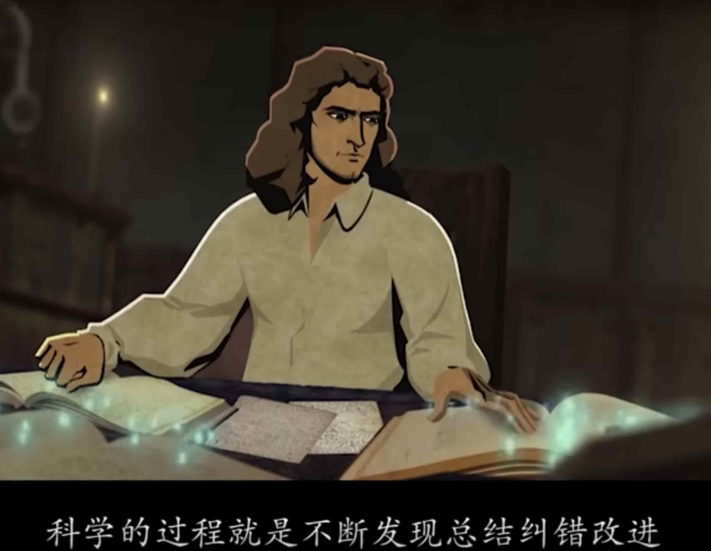

关于甲状腺疾病的几点思考
王福强
为什么治疗过程中经常提到碘？
因为甲状腺需要碘来合成甲状腺素，那如果甲状腺全切之后，其实对碘的需求也没那么多了，因为都是吃药直接补充甲状腺素，不需要用碘通过甲状腺合成。
甲状腺癌的治疗是否属于”头疼医头”？
Although scientists have not identified the exact cause of thyroid cancer…
所以其实甲状腺癌的发病机理目前为止并不清楚， 现在的处理方式，全切也好，碘131内放疗也好，其实都是解决眼前问题，并非有合理解释和全盘了解的前提下做出的决策。
试想，如果这些所谓的甲状腺癌细胞不会致命呢？ 或者有办法让其被某种东西吞噬和消融呢？ 那其实就没有必要通过物理上破坏人体这个有机体来作为治疗手段了，副作用是永久的，对于患者来说不可能是最好的治疗方案，只是对医院来说或许是持久的收入。
TSH是否有其它作用？
TSH会刺激和调节甲状腺来分泌适当的甲状腺素来调节机体的新陈代谢与内分泌等，但是， 我有理由怀疑TSH不只是这一个作用，否则当TSH指标过低（比如现在针对甲状腺癌的治疗会人为用药抑制TSH为一个很低的水平），不会有那么多副作用： 影响体内钙代谢， 会加重心脏负荷，引发或加重心肌缺血和心律失常，特别是心房颤动。
如果得了甲状腺癌并且做了甲状腺全切手术，那么，按照现在的治疗手段(抑制TSH水平到很低的0.1mU/L)，患者注定会有上面这些副作用和不良反应，不是注定要在烂摊子或者泥沼里慢慢下沉吗？
回过头来看， 做甲状腺全切的决策当时的利弊到底是如何权衡的？ 从我了解的信息来看，全切后， TSH连受体（甲状腺）都没有了，TSH高低其实无所谓了(就像是发动机拆了，加不加油都没有意义了)，但实际上，TSH高低依然会对身体有各种影响，所以也绝对不是现在研究得到的结果所说的那样，只是刺激甲状腺来调节甲状腺激素的分泌。（又或者是其它原因导致现在结论的“TSH过低的副作用”，但还没有发现和关联）
医学与科学的本质是什么？
我一直认为人体是极其复杂的一个系统，人类自己也在一直探索这个复杂系统尝试解决其偶尔发生的“问题”，但人就是人，人不是没有生命的机器， 你接手一套遗留系统处理故障的时候，或许可以错了再试、试了再错，但人作为生命体其实是经不起太多折腾，人之所以为人，他/她会关注自己的感受、自己的生命质量，人和人造系统不是一个品类。
我认为很多人对大多数人所认知的西医以及科学有偏执，其实，所有这些的基础都也只是Trial & Error， 即探索和试错，那也就意味着，所有这些是在不了解全貌的前提下做的实验，这些实验经过了某种假设和验证，就开始重复应用。

但科学也有个致命的缺陷，那就是，当下验证过的理论和结果，在下一个阶段看到更大图谱或者更多案例和场景之后才发现是错误的、有局限的，也就是说随着认知边界的拓宽，之前的很多东西是会被推翻的。
还有致命的， 假设如果错了呢？
科技一定会越来越好，但科技是否是解决当下问题的最好方式， 那就未必了。
但人也很无奈，因为每一代人都是被困在当下这个时代和当下这个科技水平，即使我知道应该有更好的决策和方式，但无奈依然困于当下、羡慕未来…
当然，我也会关注看能不能创造未来 ；）
「为AI疯狂」星球上，扶墙老师正在和朋友们讨论有趣的AI话题，你要不要⼀起来呀？^-^
这里
- 不但有及时新鲜的AI资讯和深度探讨
- 还分享AI工具、产品方法和商业机会
- 更有体系化精品付费内容等着你，加入星球(https://t.zsxq.com/0dI3ZA0sL) 即可免费领取。(加入之后一定记得看置顶消息呀！)

开天窗，拉认知，订阅「福报」，即刻拥有自己的全模态人工智能。